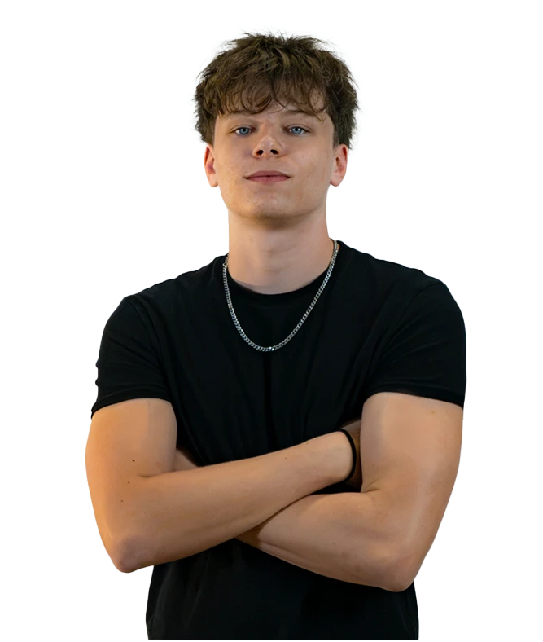

À propos
Léo Tâche
Étudiant en communication visuelle, je conçois des identités, des affiches et de l'édition — du brief à la mise en page finale.
Ce qui m'intéresse, c'est faire tenir une idée en une image : une identité de marque qui se reconnaît d'un coup d'œil, une affiche qui arrête le regard, une mise en page qui donne envie de tourner la page. La plupart des projets sur ce site sont des exercices personnels — je les fais parce que j'ai envie de les faire, pas parce qu'on me le demande.

01 Parcours
De Mézières à Sainte-Croix.
École obligatoire
Collège du Raffort, Mézières
Stage 23bis
Lausanne · réalisation d'un mini-projet vidéo en équipe
Stage DGNSI
État de Vaud · projets de transformation numérique
Stage DGEP
État de Vaud · gestion des écoles professionnelles et des gymnases
CFC de médiamaticien
CPNV, Sainte-Croix
02 Ce que je fais
Identité, affiches, édition.
Logo, charte graphique, déclinaisons — pour de vraies marques ou des exercices fictifs.
Composition, typographie, retouche photo — du brief à l'impression.
Affiches et visuels sportifs, montage et étalonnage colorimétrique.
Mise en page de magazines, sérigraphie, tampographie.
Une question, une idée de projet ? La boîte mail est ouverte.
Me contacter